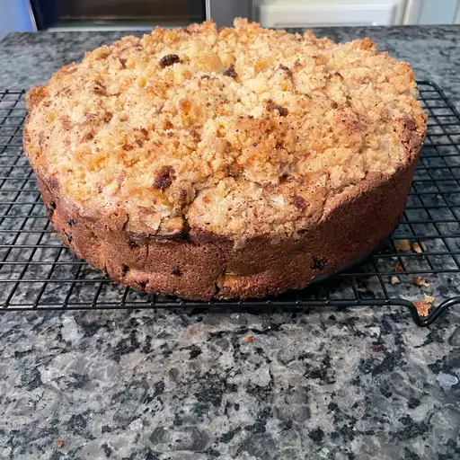

Rhubarb Cake Recipe

Description :
Tart rhubarb is perfectly balanced with sugar in this sweet and moist rhubarb cake recipe with a streusel topping.
Rhubarb Cake Ingredients
These are the ingredients you’ll need to make this homemade rhubarb cake recipe:
- Flour: All-purpose flour lends structure to the cake and helps hold the streusel together.
- Sugar: White sugar sweetens the rhubarb cake and the streusel topping.
- Baking soda: Baking soda acts as a leavener, which means it helps the cake rise.
- Salt: A pinch of salt enhances the overall flavor of the rhubarb cake.
- Eggs: Two beaten eggs add moisture and help bind the batter together.
- Sour cream: Sour cream gives the cake more moisture, plus a hint of tanginess.
- Rhubarb: You’ll need three cups of diced, fresh rhubarb.
- Butter: A half stick of butter is essential for the rich streusel topping.
- Cinnamon: Ground cinnamon gives the topping welcome warmth.
How to Make Rhubarb Cake
You’ll find the full, step-by-step recipe below – but here’s a brief overview of what you can expect when you make rhubarb cake at home:
- Make the batter and pour it into a prepared baking dish.
- Make the streusel, then sprinkle it over the batter.
- Bake in the preheated oven until a toothpick comes out clean.